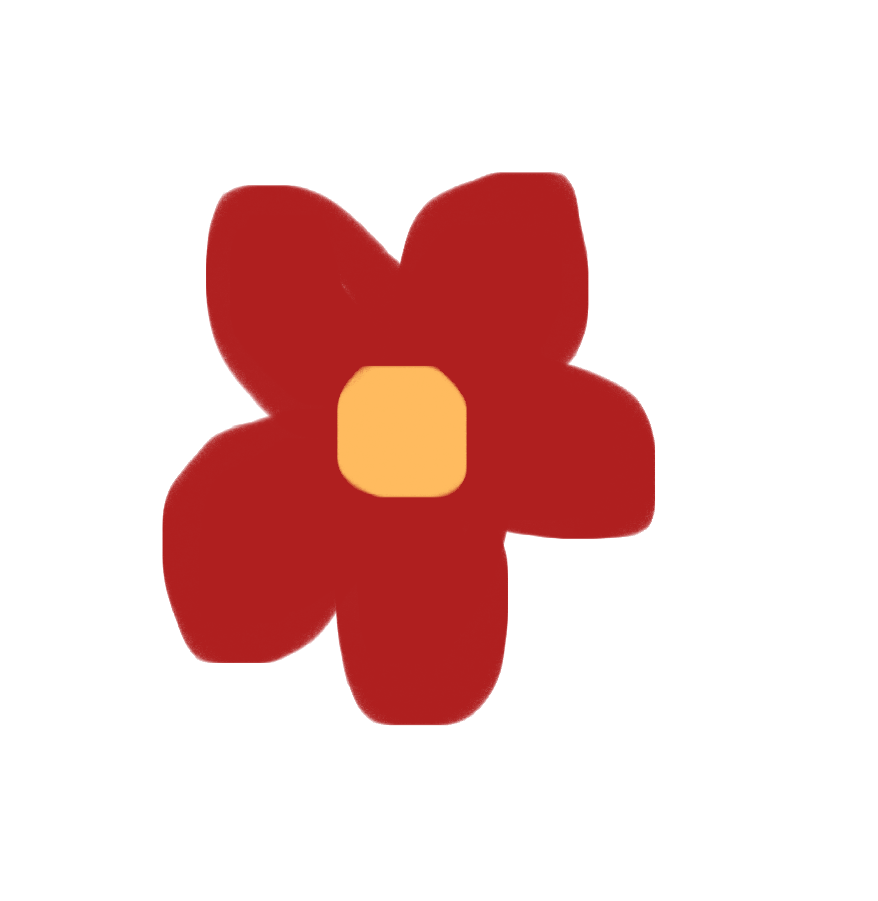
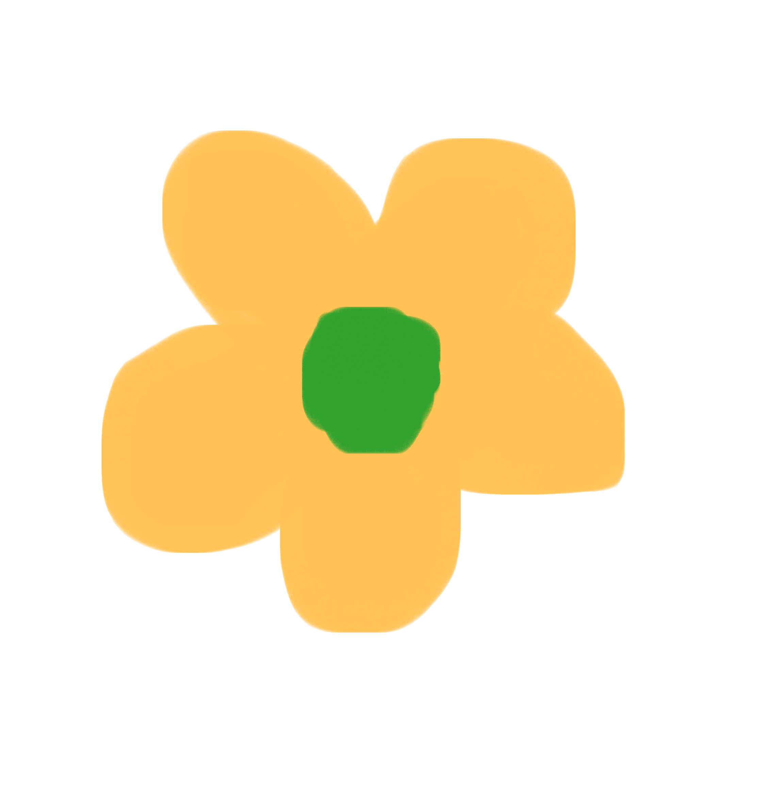

홈으로 가기

동화책 보러가기

제작 과정 보러가기
동화책을 읽고 난 후 느낀점을 써주세요.
이 웹사이트에 대한 장단점, 흥미로운 점 등을 마음껏 적어주세요.
문제가 있을 시 20236632@hallym.ac.kr로 메일을 보내주세요.
*당신의 모든 글과 정보는 유출되지 않습니다.*
사용자 정보
1. 성별을 선택하세요.
남자
여자
그외
2. 연령대를 선택하세요.
0~9세
10~19세
20~29세
30~39세
40~49세
50~59세
60~69세
70~79세
80~89세
90~99세
100세~
소감 남기기
1. 최근 독서를 한지 얼마나 되었나요?
오늘
하루 전
일주일 전
한달 전
1년 전
2. 주로 어떤 미디어를 사용해 독서를 읽나요?
종이 책
스마트폰
태블릿
컴퓨터
그외
3. 독서할 때 최대 몇 분 집중하나요?
4. '연우의 대모험'을 읽고 느낀점을 작성해주세요.
5. 이 웹 사이트에 대한 평가를 해주세요.
6. 추천하고 싶은 책을 써주세요.